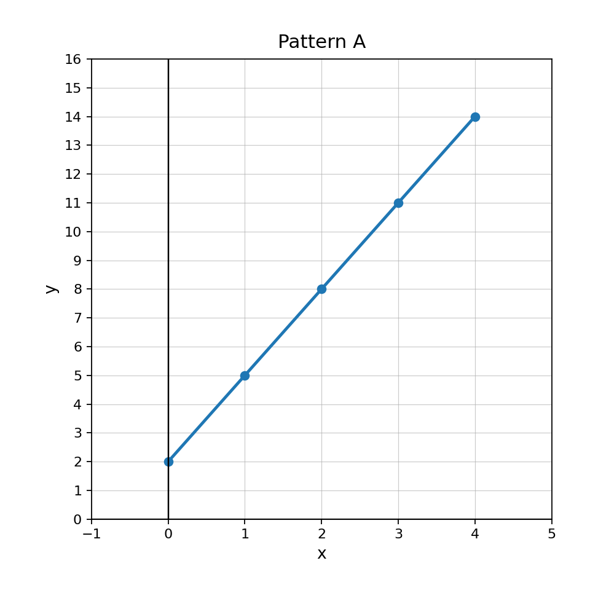

Unit 1 · Section 3 · Activity 1
Whiteboard Partners
Function Families

Unit 1.3 · Activity 1 · Whiteboard PartnersProblem 1
Problem 1
Equation classification
Classify each equation by family.
- $y=|x-3|+2$
- $y=4x+9$
- $y=x^2-7$
Unit 1.3 · Activity 1 · Whiteboard PartnersSolution 1
Solution 1
Equation classification
Classify each equation by family.
- $y=|x-3|+2$
- $y=4x+9$
- $y=x^2-7$
Solution:
- Absolute value
- Linear
- Quadratic
Unit 1.3 · Activity 1 · Whiteboard PartnersProblem 2
Problem 2
Graph shape vocabulary
Which family usually makes a U-shaped curve: linear, quadratic, absolute value, or exponential?
Unit 1.3 · Activity 1 · Whiteboard PartnersSolution 2
Solution 2
Graph shape vocabulary
Which family usually makes a U-shaped curve: linear, quadratic, absolute value, or exponential?
Solution: Quadratic functions usually make a U-shaped curve called a parabola.
Unit 1.3 · Activity 1 · Whiteboard PartnersProblem 3
Problem 3
Table sorting
Sort the tables as likely linear, quadratic, or exponential. Give one piece of evidence for each.
Table A
| $x$ | 0 | 1 | 2 | 3 |
|---|---|---|---|---|
| $y$ | 2 | 5 | 8 | 11 |
Table B
| $x$ | 0 | 1 | 2 | 3 |
|---|---|---|---|---|
| $y$ | 1 | 4 | 9 | 16 |
Table C
| $x$ | 0 | 1 | 2 | 3 |
|---|---|---|---|---|
| $y$ | 3 | 6 | 12 | 24 |
Unit 1.3 · Activity 1 · Whiteboard PartnersSolution 3
Solution 3
Table sorting
Sort the tables as likely linear, quadratic, or exponential. Give one piece of evidence for each.
Table A
| $x$ | 0 | 1 | 2 | 3 |
|---|---|---|---|---|
| $y$ | 2 | 5 | 8 | 11 |
Table B
| $x$ | 0 | 1 | 2 | 3 |
|---|---|---|---|---|
| $y$ | 1 | 4 | 9 | 16 |
Table C
| $x$ | 0 | 1 | 2 | 3 |
|---|---|---|---|---|
| $y$ | 3 | 6 | 12 | 24 |
Solution: Table A is linear because the outputs increase by $3$ each time. Table B is quadratic because the first differences are $3,5,7$, and the second differences are constant at $2$. Table C is exponential because the outputs multiply by $2$ each time.
Unit 1.3 · Activity 1 · Whiteboard PartnersProblem 4
Problem 4
Compare two families
Compare a linear function and an exponential function. How can you tell them apart from a table before seeing a graph?
Unit 1.3 · Activity 1 · Whiteboard PartnersSolution 4
Solution 4
Compare two families
Compare a linear function and an exponential function. How can you tell them apart from a table before seeing a graph?
Solution: A linear function has a constant additive change in the outputs for equal input steps. An exponential function has a constant multiplicative factor in the outputs for equal input steps.
Unit 1.3 · Activity 1 · Whiteboard PartnersProblem 5
Problem 5
Identify variable
Identify the variable in the expression $13-4t$.
Unit 1.3 · Activity 1 · Whiteboard PartnersSolution 5
Solution 5
Identify variable
Identify the variable in the expression $13-4t$.
Solution: The variable is $t$.
Unit 1.3 · Activity 1 · Whiteboard PartnersProblem 6
Problem 6
Constant term
Identify the constant term in $9x-15$.
Unit 1.3 · Activity 1 · Whiteboard PartnersSolution 6
Solution 6
Constant term
Identify the constant term in $9x-15$.
Solution: The constant term is $-15$.
Unit 1.3 · Activity 1 · Whiteboard PartnersProblem 7
Problem 7
Combine terms
Combine like terms: $$12n-5n$$
Unit 1.3 · Activity 1 · Whiteboard PartnersSolution 7
Solution 7
Combine terms
Combine like terms: $$12n-5n$$
Solution: $12n-5n=7n$.
Unit 1.3 · Activity 1 · Whiteboard PartnersProblem 8
Problem 8
Distribute
Use the distributive property: $$-3(2x-5)$$
Unit 1.3 · Activity 1 · Whiteboard PartnersSolution 8
Solution 8
Distribute
Use the distributive property: $$-3(2x-5)$$
Solution: $-3(2x-5)=-6x+15$.
Unit 1.3 · Activity 1 · Whiteboard PartnersProblem 9
Problem 9
Simplify
Simplify: $$7x-4+2x+11$$
Unit 1.3 · Activity 1 · Whiteboard PartnersSolution 9
Solution 9
Simplify
Simplify: $$7x-4+2x+11$$
Solution: $7x-4+2x+11=9x+7$.
Unit 1.3 · Activity 1 · Whiteboard PartnersProblem 10
Problem 10
Context expression
A rectangle has length $x+6$ and width $4$. Write an expression for its area in two equivalent forms.
Unit 1.3 · Activity 1 · Whiteboard PartnersSolution 10
Solution 10
Context expression
A rectangle has length $x+6$ and width $4$. Write an expression for its area in two equivalent forms.
Solution: One form is $4(x+6)$. The expanded form is $4x+24$.
Unit 1.3 · Activity 1 · Whiteboard PartnersProblem 11
Problem 11
Critique a statement
A student says, “Combining like terms means adding every number and variable together.” Critique the statement using an example.
Unit 1.3 · Activity 1 · Whiteboard PartnersSolution 11
Solution 11
Critique a statement
A student says, “Combining like terms means adding every number and variable together.” Critique the statement using an example.
Solution: The statement is not correct. Only like terms can be combined. For example, $3x+5+2x$ becomes $5x+5$, not $10x$ or $10$.
Unit 1.3 · Activity 1 · Whiteboard PartnersProblem 12
Problem 12
Create an area model
Create an area-model story or diagram description for $5(x+2)$. Then write the equivalent expanded expression and explain the connection.
Unit 1.3 · Activity 1 · Whiteboard PartnersSolution 12
Solution 12
Create an area model
Create an area-model story or diagram description for $5(x+2)$. Then write the equivalent expanded expression and explain the connection.
Solution: Example: A rectangle has width $5$ and length $x+2$. Splitting the length into $x$ and $2$ gives areas $5x$ and $10$, so $5(x+2)=5x+10$.
Unit 1.3 · Activity 1 · Whiteboard PartnersProblem 13
Problem 13
Rate from sequence
Find the constant change in $18, 15, 12, 9$.
Unit 1.3 · Activity 1 · Whiteboard PartnersSolution 13
Solution 13
Rate from sequence
Find the constant change in $18, 15, 12, 9$.
Solution: The constant change is $-3$.
Unit 1.3 · Activity 1 · Whiteboard PartnersProblem 14
Problem 14
Linear recognition
State whether the table appears linear.
| $x$ | 0 | 1 | 2 | 3 |
|---|---|---|---|---|
| $y$ | 5 | 6 | 9 | 14 |
Unit 1.3 · Activity 1 · Whiteboard PartnersSolution 14
Solution 14
Linear recognition
State whether the table appears linear.
| $x$ | 0 | 1 | 2 | 3 |
|---|---|---|---|---|
| $y$ | 5 | 6 | 9 | 14 |
Solution: The table does not appear linear. The output changes are $+1$, $+3$, and $+5$, which are not constant.
Unit 1.3 · Activity 1 · Whiteboard PartnersProblem 15
Problem 15
Interpret rate
A runner travels $24$ feet every $3$ seconds. Determine the rate in feet per second and explain its meaning.
Unit 1.3 · Activity 1 · Whiteboard PartnersSolution 15
Solution 15
Interpret rate
A runner travels $24$ feet every $3$ seconds. Determine the rate in feet per second and explain its meaning.
Solution: $24\div3=8$, so the rate is $8$ feet per second. This means the runner travels $8$ feet each second.
Unit 1.3 · Activity 1 · Whiteboard PartnersProblem 16
Problem 16
Justify linearity
Use the graph to decide whether Pattern A appears linear. Justify using the graph and rate of change.

Unit 1.3 · Activity 1 · Whiteboard PartnersSolution 16
Solution 16
Justify linearity
Use the graph to decide whether Pattern A appears linear. Justify using the graph and rate of change.
Solution: Pattern A appears linear because the points lie on a straight line and the rate of change is constant. The output increases by $3$ each time the input increases by $1$.
Unit 1.3 · Activity 1Exit Ticket
6-Question Exit Ticket
Function Families
1. Classify the equation by family: $y=2x-5$.Function Families
2. A table has outputs $4,8,16,32$ when the inputs increase by $1$. Which family is most likely: linear, quadratic, or exponential? Explain briefly.Expressions
3. Simplify: $$6a-2+3a+9$$Expressions
4. Use the distributive property: $$4(x-7)$$Rate of Change
5. Find the constant change in $5,9,13,17$.Rate of Change
6. A cyclist travels $45$ miles in $3$ hours. Find the rate in miles per hour.Unit 1.3 · Activity 1Exit Ticket Answer Key
Exit Ticket Answer Key
Function Families
1. Classify the equation by family: $y=2x-5$.Function Families
2. A table has outputs $4,8,16,32$ when the inputs increase by $1$. Which family is most likely: linear, quadratic, or exponential? Explain briefly.Expressions
3. Simplify: $$6a-2+3a+9$$Expressions
4. Use the distributive property: $$4(x-7)$$Rate of Change
5. Find the constant change in $5,9,13,17$.Rate of Change
6. A cyclist travels $45$ miles in $3$ hours. Find the rate in miles per hour.Teacher key:
- Linear.
- Exponential, because the outputs multiply by $2$ each time.
- $6a-2+3a+9=9a+7$.
- $4(x-7)=4x-28$.
- The constant change is $+4$.
- $45\div3=15$, so the rate is $15$ miles per hour.